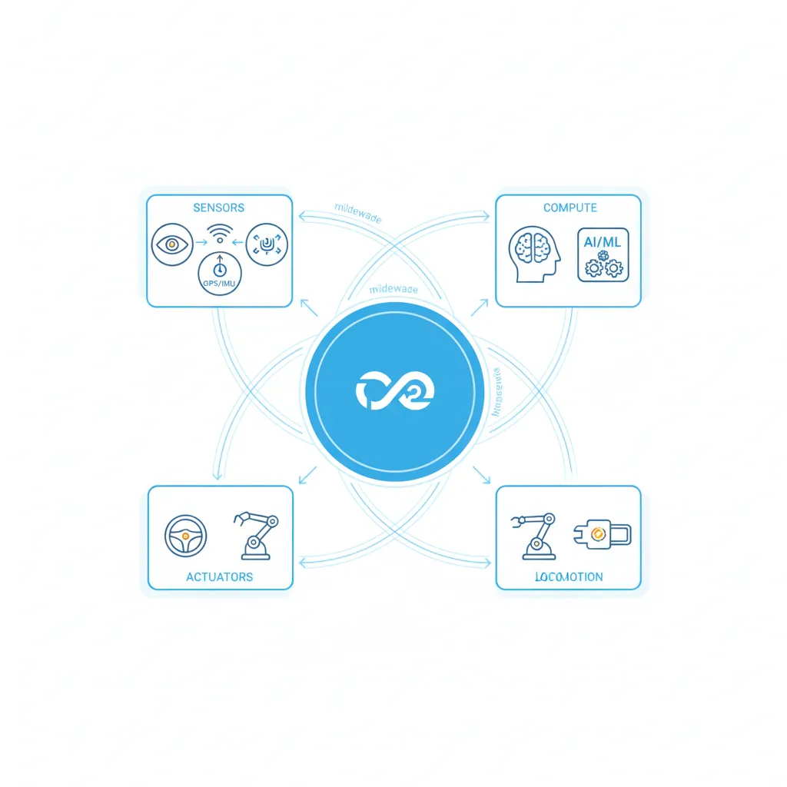
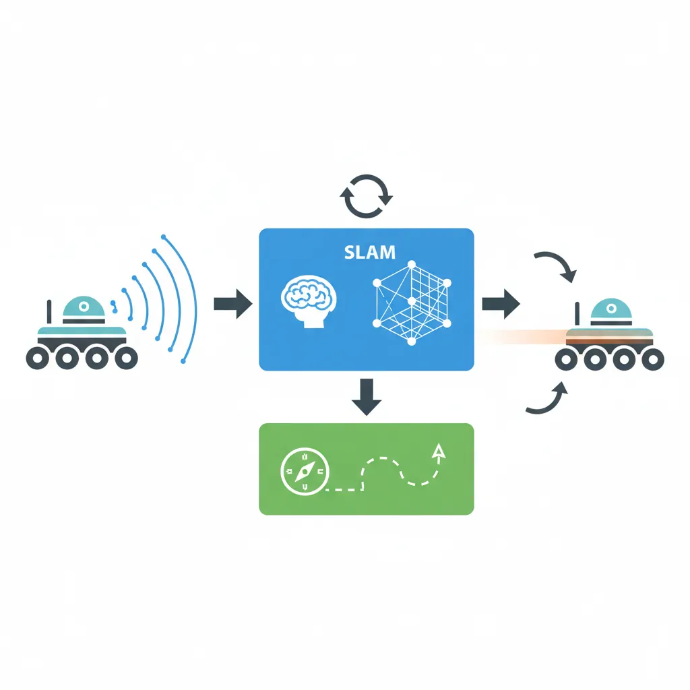
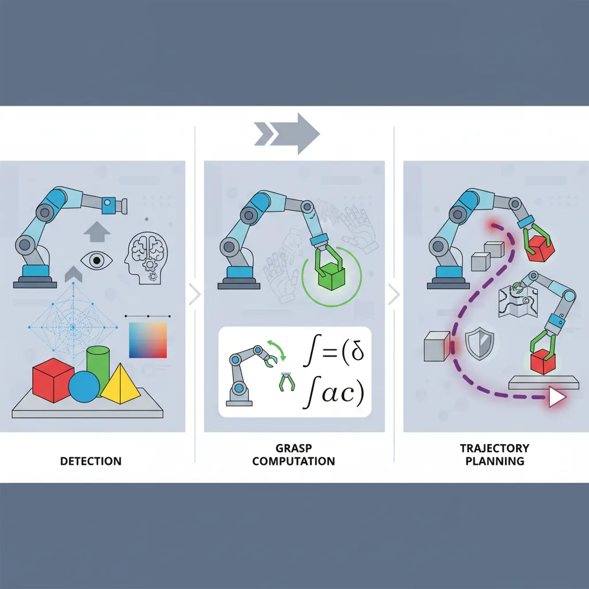
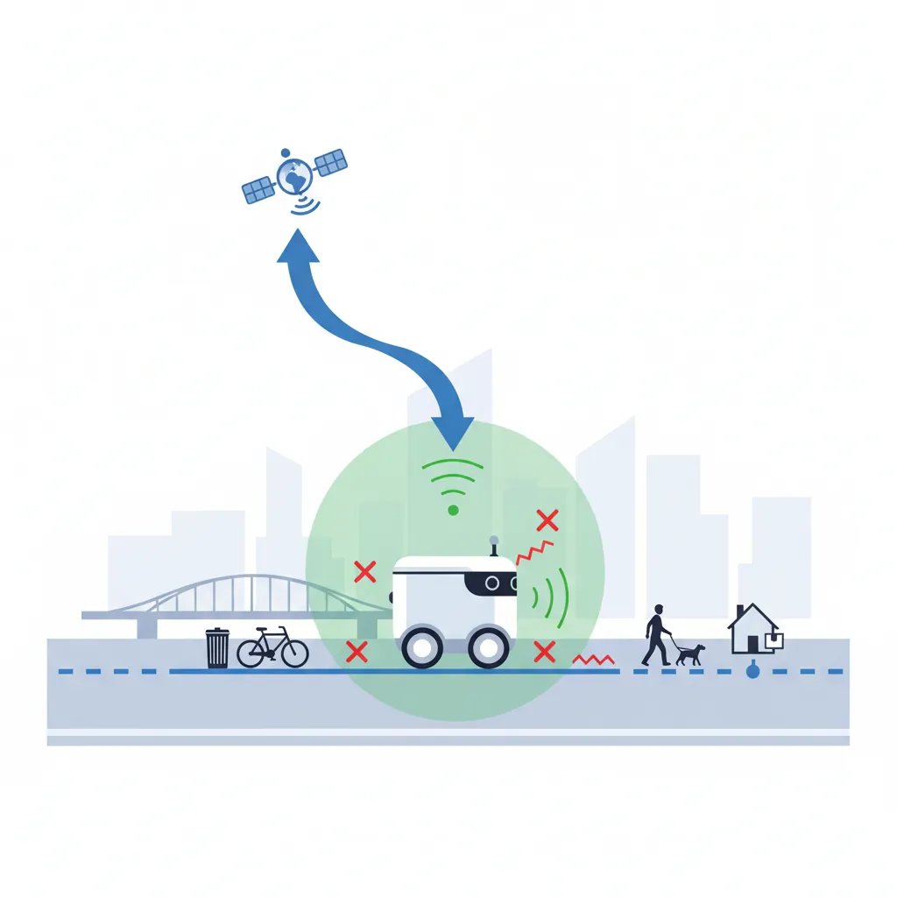
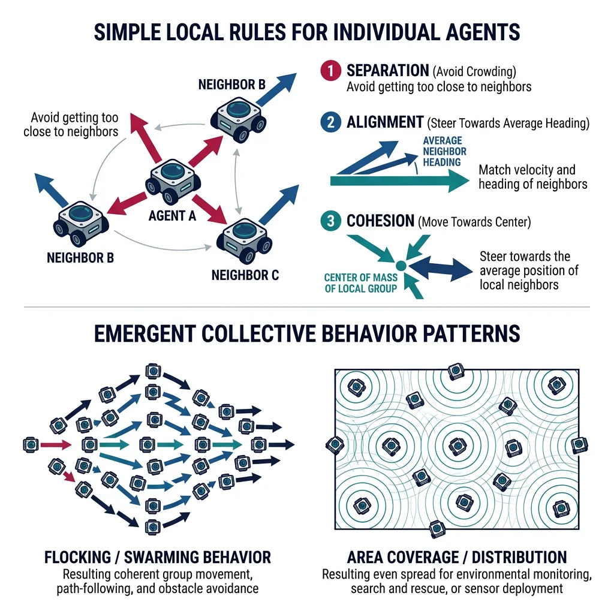

Autonomous Rover
Robotics & Automation Mastery
Introduction to Robotics
History, types, DOF, architectures, mechatronics, ethicsSensors & Perception Systems
Encoders, IMUs, LiDAR, cameras, sensor fusion, Kalman filters, SLAMActuators & Motion Control
DC/servo/stepper motors, hydraulics, drivers, gear systemsKinematics (Forward & Inverse)
DH parameters, transformations, Jacobians, workspace analysisDynamics & Robot Modeling
Newton-Euler, Lagrangian, inertia, friction, contact modelingControl Systems & PID
PID tuning, state-space, LQR, MPC, adaptive & robust controlEmbedded Systems & Microcontrollers
Arduino, STM32, RTOS, PWM, serial protocols, FPGARobot Operating Systems (ROS)
ROS2, nodes, topics, Gazebo, URDF, navigation stacksComputer Vision for Robotics
Calibration, stereo vision, object recognition, visual SLAMAI Integration & Autonomous Systems
ML, reinforcement learning, path planning, swarm roboticsHuman-Robot Interaction (HRI)
Cobots, gesture/voice control, safety standards, social roboticsIndustrial Robotics & Automation
PLC, SCADA, Industry 4.0, smart factories, digital twinsMobile Robotics
Wheeled/legged robots, autonomous vehicles, drones, marine roboticsSafety, Reliability & Compliance
Functional safety, redundancy, ISO standards, cybersecurityAdvanced & Emerging Robotics
Soft robotics, bio-inspired, surgical, space, nano-roboticsSystems Integration & Deployment
HW/SW co-design, testing, field deployment, lifecycleRobotics Business & Strategy
Startups, product-market fit, manufacturing, go-to-marketComplete Robotics System Project
Autonomous rover, pick-and-place arm, delivery robot, swarm simThe autonomous rover is the "Hello World" of mobile robotics — it integrates sensors, perception, control, and path planning into one cohesive system. Think of building a rover like building a miniature self-driving car: it needs to sense its environment, understand where it is, decide where to go, and physically move there — all autonomously.

Every rover project starts with a solid Bill of Materials (BOM). Here's a practical, budget-friendly parts list for a capable research/learning rover:
| Component | Part | Specs | Est. Cost | Series Reference |
|---|---|---|---|---|
| Compute | Raspberry Pi 5 (8GB) | 2.4 GHz quad-core, 8GB RAM | $80 | Part 7: Embedded Systems |
| Microcontroller | Arduino Mega 2560 | Motor control, sensor I/O | $15 | Part 7: Embedded Systems |
| LiDAR | RPLiDAR A1M8 | 360°, 12m range, 8000 sps | $100 | Part 2: Sensors |
| IMU | BNO055 | 9-DOF absolute orientation | $30 | Part 2: Sensors |
| Motors (×4) | JGB37-520 DC Gear Motor | 12V, 150 RPM, encoder | $40 | Part 3: Actuators |
| Motor Driver | L298N Dual H-Bridge (×2) | 2A per channel | $10 | Part 3: Actuators |
| Camera | Raspberry Pi Camera v3 | 12MP, autofocus | $25 | Part 9: Computer Vision |
| Chassis | 4WD aluminum platform | 250mm × 150mm | $45 | — |
| Battery | 3S LiPo 11.1V 5000mAh | ~2 hour runtime | $35 | — |
| Voltage Regulator | 5V/3A Buck Converter | Powers Pi from LiPo | $8 | — |
Total estimated BOM: ~$390 — a capable research rover at a fraction of commercial alternatives ($2,000-5,000).
Firmware & Motor Control
The firmware layer bridges the high-level ROS2 commands with the physical motors. The Arduino handles real-time motor control via PWM signals, reads wheel encoders for odometry, and communicates with the Raspberry Pi over serial (UART). Think of it as the spinal cord of the rover — handling reflexive motor actions while the "brain" (Pi) handles higher-level thinking.
// Rover Motor Control Firmware — Arduino
// Handles differential drive, encoder reading, and serial command parsing
// Independent, upload-ready sketch
// Motor pins (L298N driver)
#define LEFT_EN 5 // PWM
#define LEFT_IN1 6
#define LEFT_IN2 7
#define RIGHT_EN 10 // PWM
#define RIGHT_IN1 8
#define RIGHT_IN2 9
// Encoder pins (interrupt-capable)
#define LEFT_ENC_A 2
#define LEFT_ENC_B 4
#define RIGHT_ENC_A 3
#define RIGHT_ENC_B 11
// Encoder state
volatile long leftCount = 0, rightCount = 0;
const int TICKS_PER_REV = 360; // Encoder CPR
const float WHEEL_DIAMETER = 0.065; // meters
const float WHEEL_BASE = 0.20; // meters (axle-to-axle)
void leftEncoderISR() {
leftCount += (digitalRead(LEFT_ENC_B) == HIGH) ? 1 : -1;
}
void rightEncoderISR() {
rightCount += (digitalRead(RIGHT_ENC_B) == HIGH) ? 1 : -1;
}
void setMotor(int enPin, int in1, int in2, int speed) {
// speed: -255 to 255
if (speed >= 0) {
digitalWrite(in1, HIGH);
digitalWrite(in2, LOW);
analogWrite(enPin, min(speed, 255));
} else {
digitalWrite(in1, LOW);
digitalWrite(in2, HIGH);
analogWrite(enPin, min(-speed, 255));
}
}
void setup() {
Serial.begin(115200);
// Motor pins
pinMode(LEFT_EN, OUTPUT); pinMode(LEFT_IN1, OUTPUT); pinMode(LEFT_IN2, OUTPUT);
pinMode(RIGHT_EN, OUTPUT); pinMode(RIGHT_IN1, OUTPUT); pinMode(RIGHT_IN2, OUTPUT);
// Encoder pins
pinMode(LEFT_ENC_A, INPUT_PULLUP); pinMode(LEFT_ENC_B, INPUT_PULLUP);
pinMode(RIGHT_ENC_A, INPUT_PULLUP); pinMode(RIGHT_ENC_B, INPUT_PULLUP);
attachInterrupt(digitalPinToInterrupt(LEFT_ENC_A), leftEncoderISR, RISING);
attachInterrupt(digitalPinToInterrupt(RIGHT_ENC_A), rightEncoderISR, RISING);
Serial.println("Rover firmware ready");
}
void loop() {
// Read serial commands: "M left_speed right_speed\n"
if (Serial.available()) {
String cmd = Serial.readStringUntil('\n');
if (cmd.startsWith("M")) {
int leftSpeed = cmd.substring(2, cmd.indexOf(' ', 2)).toInt();
int rightSpeed = cmd.substring(cmd.indexOf(' ', 2) + 1).toInt();
setMotor(LEFT_EN, LEFT_IN1, LEFT_IN2, leftSpeed);
setMotor(RIGHT_EN, RIGHT_IN1, RIGHT_IN2, rightSpeed);
} else if (cmd == "S") { // Stop
setMotor(LEFT_EN, LEFT_IN1, LEFT_IN2, 0);
setMotor(RIGHT_EN, RIGHT_IN1, RIGHT_IN2, 0);
}
}
// Publish encoder counts every 50ms
static unsigned long lastPub = 0;
if (millis() - lastPub >= 50) {
Serial.print("E ");
Serial.print(leftCount);
Serial.print(" ");
Serial.println(rightCount);
lastPub = millis();
}
}
SLAM & Navigation
SLAM (Simultaneous Localization and Mapping) is where the rover becomes truly autonomous. Using the RPLiDAR sensor, the rover builds a map of its environment while simultaneously tracking its own position within that map. We use the slam_toolbox package in ROS2, which implements a graph-based SLAM algorithm well-suited for indoor environments.

#!/usr/bin/env python3
"""
ROS2 Rover Navigation Node — Autonomous Goal-Seeking
Combines odometry, LiDAR SLAM, and Nav2 for point-to-point navigation.
Independent ROS2 node — run with: ros2 run rover_nav goal_navigator
"""
import rclpy
from rclpy.node import Node
from geometry_msgs.msg import PoseStamped, Twist
from nav_msgs.msg import Odometry, OccupancyGrid
from sensor_msgs.msg import LaserScan
import numpy as np
import math
class RoverNavigator(Node):
def __init__(self):
super().__init__('rover_navigator')
# Publishers
self.cmd_pub = self.create_publisher(Twist, '/cmd_vel', 10)
self.goal_pub = self.create_publisher(PoseStamped, '/goal_pose', 10)
# Subscribers
self.create_subscription(Odometry, '/odom', self.odom_callback, 10)
self.create_subscription(LaserScan, '/scan', self.scan_callback, 10)
self.create_subscription(OccupancyGrid, '/map', self.map_callback, 10)
# State
self.position = {'x': 0.0, 'y': 0.0, 'theta': 0.0}
self.goal = None
self.obstacle_detected = False
self.map_received = False
# Parameters
self.declare_parameter('goal_tolerance', 0.15) # meters
self.declare_parameter('obstacle_threshold', 0.35) # meters
self.declare_parameter('linear_speed', 0.2) # m/s
self.declare_parameter('angular_speed', 0.8) # rad/s
# Navigation timer (10 Hz control loop)
self.create_timer(0.1, self.navigate)
self.get_logger().info('Rover Navigator initialized — waiting for goal...')
def odom_callback(self, msg):
self.position['x'] = msg.pose.pose.position.x
self.position['y'] = msg.pose.pose.position.y
# Extract yaw from quaternion
q = msg.pose.pose.orientation
siny = 2.0 * (q.w * q.z + q.x * q.y)
cosy = 1.0 - 2.0 * (q.y * q.y + q.z * q.z)
self.position['theta'] = math.atan2(siny, cosy)
def scan_callback(self, msg):
# Check front 60° arc for obstacles
ranges = np.array(msg.ranges)
n = len(ranges)
front_start = n * 330 // 360 # -30 degrees
front_end = n * 30 // 360 # +30 degrees
front_ranges = np.concatenate([ranges[front_start:], ranges[:front_end]])
valid = front_ranges[np.isfinite(front_ranges)]
threshold = self.get_parameter('obstacle_threshold').value
self.obstacle_detected = len(valid) > 0 and np.min(valid) < threshold
def map_callback(self, msg):
if not self.map_received:
self.get_logger().info(
f'Map received: {msg.info.width}x{msg.info.height} '
f'at {msg.info.resolution:.3f} m/pixel'
)
self.map_received = True
def send_goal(self, x, y, theta=0.0):
"""Send a navigation goal to Nav2."""
goal_msg = PoseStamped()
goal_msg.header.frame_id = 'map'
goal_msg.header.stamp = self.get_clock().now().to_msg()
goal_msg.pose.position.x = x
goal_msg.pose.position.y = y
goal_msg.pose.orientation.z = math.sin(theta / 2)
goal_msg.pose.orientation.w = math.cos(theta / 2)
self.goal = {'x': x, 'y': y}
self.goal_pub.publish(goal_msg)
self.get_logger().info(f'Goal sent: ({x:.2f}, {y:.2f})')
def navigate(self):
"""Simple reactive navigation (fallback when Nav2 is not running)."""
if self.goal is None:
return
cmd = Twist()
dx = self.goal['x'] - self.position['x']
dy = self.goal['y'] - self.position['y']
distance = math.sqrt(dx**2 + dy**2)
goal_angle = math.atan2(dy, dx)
angle_error = goal_angle - self.position['theta']
# Normalize to [-pi, pi]
angle_error = math.atan2(math.sin(angle_error), math.cos(angle_error))
tolerance = self.get_parameter('goal_tolerance').value
if distance < tolerance:
self.get_logger().info('Goal reached!')
self.goal = None
cmd.linear.x = 0.0
cmd.angular.z = 0.0
elif self.obstacle_detected:
# Reactive obstacle avoidance — turn away
cmd.linear.x = 0.0
cmd.angular.z = self.get_parameter('angular_speed').value
elif abs(angle_error) > 0.3:
# Rotate toward goal
cmd.linear.x = 0.0
cmd.angular.z = self.get_parameter('angular_speed').value * np.sign(angle_error)
else:
# Drive toward goal
cmd.linear.x = self.get_parameter('linear_speed').value
cmd.angular.z = 0.5 * angle_error # Proportional steering
self.cmd_pub.publish(cmd)
def main(args=None):
rclpy.init(args=args)
node = RoverNavigator()
# Example: send goal after 5 seconds
node.create_timer(5.0, lambda: node.send_goal(2.0, 1.5), callback_group=None)
rclpy.spin(node)
node.destroy_node()
rclpy.shutdown()
if __name__ == '__main__':
main()
Launch Sequence: Rover SLAM + Navigation
The complete rover launch sequence brings up all subsystems in order:
# Terminal 1: Launch robot hardware drivers
ros2 launch rover_bringup rover_hardware.launch.py
# Terminal 2: Start LiDAR
ros2 launch rplidar_ros rplidar_a1_launch.py
# Terminal 3: Launch SLAM
ros2 launch slam_toolbox online_async_launch.py \
params_file:=config/slam_params.yaml
# Terminal 4: Launch Nav2 navigation stack
ros2 launch nav2_bringup navigation_launch.py \
params_file:=config/nav2_params.yaml
# Terminal 5: Launch RViz for visualization
ros2 launch rover_bringup rviz_launch.py
# Terminal 6: Send navigation goal
ros2 run rover_nav goal_navigator
Each terminal runs a different subsystem — this modular architecture lets you test and debug individual components independently, exactly as covered in Part 8: ROS.
Pick-and-Place Arm
The pick-and-place arm project integrates kinematics, control, computer vision, and motion planning into a practical industrial automation system. Think of it as building a robotic chef's hand that can see an ingredient, calculate how to reach it, grasp it precisely, and place it exactly where needed — all while avoiding collisions with its environment.

| Component | Part | Purpose | Series Reference |
|---|---|---|---|
| Arm | SO-ARM100 / MyCobot 280 | 6-DOF articulated manipulator | Part 4: Kinematics |
| Gripper | Servo-driven parallel jaw | Grasp objects 10-80mm | Part 3: Actuators |
| Camera | Intel RealSense D435i | RGB-D for object detection | Part 9: Computer Vision |
| Compute | Ubuntu PC / Jetson Orin Nano | MoveIt2, perception pipeline | Part 7: Embedded Systems |
| Controller | ros2_control + joint_trajectory | Smooth multi-joint motion | Part 6: Control Systems |
Gripper & Vision Pipeline
The vision pipeline transforms raw camera data into actionable grasp commands. It follows a Sense → Detect → Locate → Grasp pipeline: the RGB-D camera captures the scene, a detection model identifies objects, depth data provides 3D coordinates, and the inverse kinematics solver generates joint angles for the grasp pose.
#!/usr/bin/env python3
"""
Object Detection & Grasp Pose Estimation Node
Uses RGB-D camera to detect objects and compute 6-DOF grasp poses.
Independent ROS2 node for the pick-and-place pipeline.
"""
import numpy as np
import cv2
class GraspPoseEstimator:
"""Estimates grasp poses from RGB-D data using geometric analysis."""
def __init__(self, camera_matrix, gripper_width=0.08):
self.K = camera_matrix # 3x3 intrinsic matrix
self.gripper_width = gripper_width # meters
self.min_depth = 0.15 # meters (minimum valid depth)
self.max_depth = 1.0 # meters (workspace limit)
def detect_objects(self, rgb_image, depth_image):
"""Detect graspable objects using color segmentation + contours."""
hsv = cv2.cvtColor(rgb_image, cv2.COLOR_BGR2HSV)
# Detect colored objects (adjustable for target objects)
lower = np.array([0, 80, 80])
upper = np.array([180, 255, 255])
mask = cv2.inRange(hsv, lower, upper)
# Clean up mask
kernel = cv2.getStructuringElement(cv2.MORPH_ELLIPSE, (5, 5))
mask = cv2.morphologyEx(mask, cv2.MORPH_CLOSE, kernel)
mask = cv2.morphologyEx(mask, cv2.MORPH_OPEN, kernel)
contours, _ = cv2.findContours(mask, cv2.RETR_EXTERNAL, cv2.CHAIN_APPROX_SIMPLE)
objects = []
for cnt in contours:
area = cv2.contourArea(cnt)
if area < 500 or area > 50000: # Filter by size
continue
# Bounding box and center
x, y, w, h = cv2.boundingRect(cnt)
cx, cy = x + w // 2, y + h // 2
# Get depth at center (median of region for robustness)
depth_roi = depth_image[max(0,cy-5):cy+5, max(0,cx-5):cx+5]
valid_depths = depth_roi[depth_roi > 0] / 1000.0 # mm to meters
if len(valid_depths) == 0:
continue
depth = np.median(valid_depths)
if self.min_depth < depth < self.max_depth:
# Back-project to 3D camera frame
fx, fy = self.K[0, 0], self.K[1, 1]
px, py = self.K[0, 2], self.K[1, 2]
X = (cx - px) * depth / fx
Y = (cy - py) * depth / fy
Z = depth
objects.append({
'center_2d': (cx, cy),
'position_3d': np.array([X, Y, Z]),
'bbox': (x, y, w, h),
'area': area,
'depth': depth
})
# Sort by size (largest first for priority grasping)
objects.sort(key=lambda o: o['area'], reverse=True)
return objects
def compute_grasp_pose(self, obj, approach_offset=0.10):
"""Compute 6-DOF grasp pose (position + orientation) for top-down grasp."""
pos = obj['position_3d'].copy()
# Approach from above: grasp position slightly above object
grasp_position = pos.copy()
grasp_position[2] -= 0.02 # Lower to grasp surface
# Pre-grasp position (approach vector)
pre_grasp = pos.copy()
pre_grasp[2] -= approach_offset # Offset above
# Top-down orientation (Z-axis pointing down)
# Rotation matrix: gripper Z down, X along gripper fingers
grasp_orientation = np.array([
[1, 0, 0],
[0, -1, 0],
[0, 0, -1]
])
return {
'pre_grasp': pre_grasp,
'grasp': grasp_position,
'orientation': grasp_orientation,
'gripper_width': min(self.gripper_width, obj['bbox'][2] * obj['depth'] / self.K[0,0] + 0.01)
}
# Example usage (independent, executable)
if __name__ == '__main__':
# Simulated camera intrinsics (Intel RealSense D435i typical values)
K = np.array([
[615.0, 0.0, 320.0],
[ 0.0, 615.0, 240.0],
[ 0.0, 0.0, 1.0]
])
estimator = GraspPoseEstimator(K, gripper_width=0.08)
# Create synthetic test data
rgb = np.zeros((480, 640, 3), dtype=np.uint8)
cv2.rectangle(rgb, (280, 200), (360, 280), (0, 120, 255), -1) # Orange object
depth = np.zeros((480, 640), dtype=np.uint16)
depth[200:280, 280:360] = 450 # 450mm depth
objects = estimator.detect_objects(rgb, depth)
print(f"Detected {len(objects)} object(s)")
for i, obj in enumerate(objects):
pose = estimator.compute_grasp_pose(obj)
print(f"\nObject {i+1}:")
print(f" 3D position: [{obj['position_3d'][0]:.3f}, {obj['position_3d'][1]:.3f}, {obj['position_3d'][2]:.3f}] m")
print(f" Grasp point: [{pose['grasp'][0]:.3f}, {pose['grasp'][1]:.3f}, {pose['grasp'][2]:.3f}] m")
print(f" Gripper width: {pose['gripper_width']*1000:.1f} mm")
MoveIt Integration
MoveIt2 is the motion planning framework that turns a grasp pose into a collision-free joint trajectory. It handles inverse kinematics, obstacle avoidance, trajectory smoothing, and execution — the "brains" behind every smooth arm movement.
#!/usr/bin/env python3
"""
MoveIt2 Pick-and-Place Controller
Executes pick-and-place sequences using MoveIt2 motion planning.
Requires: moveit2, ros2_control running with robot URDF loaded.
"""
import rclpy
from rclpy.node import Node
import numpy as np
class PickPlaceController:
"""High-level pick-and-place controller using MoveIt2 concepts."""
def __init__(self, arm_group='arm', gripper_group='gripper'):
self.arm_group = arm_group
self.gripper_group = gripper_group
self.home_joints = [0.0, -1.57, 1.57, 0.0, 1.57, 0.0] # 6-DOF home
self.place_joints = [1.57, -1.0, 1.2, 0.0, 1.57, 0.0] # Place position
def plan_cartesian_path(self, waypoints, eef_step=0.005, max_velocity_scaling=0.3):
"""
Plan a Cartesian path through waypoints.
In real MoveIt2: move_group.compute_cartesian_path(waypoints, eef_step)
Here we show the planning concept with IK at each waypoint.
"""
trajectory = []
for i, wp in enumerate(waypoints):
# Each waypoint is [x, y, z, roll, pitch, yaw]
joint_solution = self._inverse_kinematics(wp)
if joint_solution is not None:
trajectory.append({
'waypoint': i,
'pose': wp,
'joints': joint_solution,
'velocity_scaling': max_velocity_scaling
})
else:
print(f" IK failed for waypoint {i}: {wp}")
return None
print(f" Cartesian path planned: {len(trajectory)} waypoints")
return trajectory
def _inverse_kinematics(self, target_pose):
"""
Simplified 6-DOF IK solver (analytical for demonstration).
Real MoveIt2 uses KDL, TRAC-IK, or BioIK solvers.
"""
x, y, z = target_pose[:3]
# Simplified: check reachability
reach = np.sqrt(x**2 + y**2 + z**2)
if reach > 0.8 or reach < 0.1: # Workspace limits
return None
# Analytical IK (simplified 6-DOF)
q1 = np.arctan2(y, x)
r = np.sqrt(x**2 + y**2)
L1, L2 = 0.3, 0.3 # Link lengths
d = np.clip((r**2 + z**2 - L1**2 - L2**2) / (2 * L1 * L2), -1, 1)
q3 = np.arccos(d)
q2 = np.arctan2(z, r) - np.arctan2(L2 * np.sin(q3), L1 + L2 * np.cos(q3))
return [q1, q2, q3, 0.0, -(q2 + q3), 0.0] # Wrist orientation
def execute_pick_and_place(self, grasp_pose, place_pose):
"""Execute a complete pick-and-place cycle."""
print("\n" + "=" * 50)
print("PICK-AND-PLACE EXECUTION")
print("=" * 50)
# Step 1: Move to home position
print("\n1. Moving to HOME position...")
print(f" Joints: {[f'{j:.2f}' for j in self.home_joints]}")
# Step 2: Open gripper
print("2. Opening GRIPPER...")
# Step 3: Move to pre-grasp position
pre_grasp = grasp_pose.copy()
pre_grasp[2] += 0.10 # 10cm above grasp
print(f"3. Moving to PRE-GRASP: [{pre_grasp[0]:.3f}, {pre_grasp[1]:.3f}, {pre_grasp[2]:.3f}]")
approach_path = self.plan_cartesian_path([pre_grasp])
# Step 4: Approach (Cartesian descent)
print(f"4. APPROACHING grasp point: [{grasp_pose[0]:.3f}, {grasp_pose[1]:.3f}, {grasp_pose[2]:.3f}]")
grasp_path = self.plan_cartesian_path([pre_grasp, grasp_pose], max_velocity_scaling=0.1)
# Step 5: Close gripper
print("5. Closing GRIPPER — object grasped!")
# Step 6: Retreat (lift up)
print(f"6. RETREATING to pre-grasp height...")
retreat_path = self.plan_cartesian_path([grasp_pose, pre_grasp], max_velocity_scaling=0.15)
# Step 7: Move to place position
pre_place = place_pose.copy()
pre_place[2] += 0.10
print(f"7. Moving to PLACE position: [{place_pose[0]:.3f}, {place_pose[1]:.3f}, {place_pose[2]:.3f}]")
place_path = self.plan_cartesian_path([pre_place, place_pose], max_velocity_scaling=0.2)
# Step 8: Open gripper to release
print("8. Opening GRIPPER — object placed!")
# Step 9: Retreat and return home
print("9. Returning to HOME position...")
print("\n✅ Pick-and-place cycle COMPLETE")
return True
# Example execution
if __name__ == '__main__':
controller = PickPlaceController()
# Grasp an object at [0.35, 0.1, 0.05] (x, y, z in base frame)
grasp = [0.35, 0.10, 0.05, 0.0, 3.14, 0.0] # Top-down grasp
place = [0.10, 0.35, 0.08, 0.0, 3.14, 0.0] # Bin location
controller.execute_pick_and_place(grasp, place)
Delivery Robot
The delivery robot project extends mobile robotics into real-world outdoor operation — navigating sidewalks, crossing intersections, handling weather, and managing a fleet of multiple robots. Think of it as building a robotic mail carrier that must reliably traverse miles of mixed terrain, avoid pedestrians, and deliver packages to the right doorstep.

Outdoor Navigation & GPS
Outdoor navigation combines GPS for global positioning with local perception for obstacle avoidance. Pure GPS is accurate to 2-5 meters (or 1-2cm with RTK corrections), which is insufficient for sidewalk navigation. The solution is sensor fusion: GPS provides the global route, while LiDAR/camera handle local path planning around obstacles.
#!/usr/bin/env python3
"""
GPS + Local Sensor Fusion for Outdoor Navigation
Combines RTK-GPS with LiDAR odometry for precise outdoor localization.
Independent, self-contained demonstration.
"""
import numpy as np
class OutdoorLocalizer:
"""Fuses GPS and LiDAR odometry using Extended Kalman Filter."""
def __init__(self):
# State: [x, y, theta, v] in local ENU frame
self.state = np.zeros(4)
self.P = np.diag([1.0, 1.0, 0.1, 0.5]) # Initial covariance
# Process noise
self.Q = np.diag([0.05, 0.05, 0.01, 0.1])
# GPS measurement noise (RTK-corrected)
self.R_gps = np.diag([0.02, 0.02]) # 2cm RTK accuracy
# Odometry measurement noise
self.R_odom = np.diag([0.01, 0.01, 0.005]) # Relative motion
# Reference GPS origin (first fix)
self.gps_origin = None
def gps_to_local(self, lat, lon):
"""Convert GPS lat/lon to local ENU coordinates (meters)."""
if self.gps_origin is None:
self.gps_origin = (lat, lon)
return 0.0, 0.0
dlat = lat - self.gps_origin[0]
dlon = lon - self.gps_origin[1]
# Approximate conversion (valid for small areas)
east = dlon * 111320 * np.cos(np.radians(lat))
north = dlat * 110540
return east, north
def predict(self, dt):
"""Predict state forward using constant-velocity model."""
x, y, theta, v = self.state
# State transition
self.state[0] += v * np.cos(theta) * dt
self.state[1] += v * np.sin(theta) * dt
# Jacobian of state transition
F = np.eye(4)
F[0, 2] = -v * np.sin(theta) * dt
F[0, 3] = np.cos(theta) * dt
F[1, 2] = v * np.cos(theta) * dt
F[1, 3] = np.sin(theta) * dt
self.P = F @ self.P @ F.T + self.Q
def update_gps(self, lat, lon):
"""Update state with GPS measurement."""
east, north = self.gps_to_local(lat, lon)
z = np.array([east, north])
# Measurement model: H maps state [x, y, theta, v] to [x, y]
H = np.array([[1, 0, 0, 0], [0, 1, 0, 0]])
# Innovation
y = z - H @ self.state
S = H @ self.P @ H.T + self.R_gps
K = self.P @ H.T @ np.linalg.inv(S)
self.state += K @ y
self.P = (np.eye(4) - K @ H) @ self.P
return {'east': east, 'north': north, 'innovation': np.linalg.norm(y)}
def update_odometry(self, dx, dy, dtheta):
"""Update state with wheel/LiDAR odometry."""
z = np.array([self.state[0] + dx, self.state[1] + dy, self.state[2] + dtheta])
H = np.array([[1, 0, 0, 0], [0, 1, 0, 0], [0, 0, 1, 0]])
y = z - H @ self.state
y[2] = np.arctan2(np.sin(y[2]), np.cos(y[2])) # Normalize angle
S = H @ self.P @ H.T + self.R_odom
K = self.P @ H.T @ np.linalg.inv(S)
self.state += K @ y
self.P = (np.eye(4) - K @ H) @ self.P
# Simulation: delivery route along sidewalk
localizer = OutdoorLocalizer()
np.random.seed(42)
# Simulated GPS waypoints (delivery route)
route_lat = np.linspace(37.7749, 37.7760, 20) # ~120 meters north
route_lon = np.linspace(-122.4194, -122.4185, 20) # ~80 meters east
print("=" * 60)
print("OUTDOOR DELIVERY ROBOT — GPS + ODOMETRY FUSION")
print("=" * 60)
for i in range(len(route_lat)):
# Predict forward
localizer.predict(dt=0.5)
localizer.state[3] = 1.2 # 1.2 m/s walking speed
# Simulate noisy GPS update
gps_lat = route_lat[i] + np.random.normal(0, 0.000002) # ~0.2m noise
gps_lon = route_lon[i] + np.random.normal(0, 0.000002)
result = localizer.update_gps(gps_lat, gps_lon)
# Simulate odometry update
localizer.update_odometry(
dx=np.random.normal(0.3, 0.01),
dy=np.random.normal(0.2, 0.01),
dtheta=np.random.normal(0.0, 0.005)
)
if i % 5 == 0:
print(f"\nWaypoint {i+1}/{len(route_lat)}:")
print(f" Position: ({localizer.state[0]:.2f}, {localizer.state[1]:.2f}) m")
print(f" Heading: {np.degrees(localizer.state[2]):.1f}°")
print(f" Speed: {localizer.state[3]:.2f} m/s")
print(f" GPS innovation: {result['innovation']:.3f} m")
print(f"\n✅ Route complete — total distance: {np.sqrt(localizer.state[0]**2 + localizer.state[1]**2):.1f} m")
Fleet Management
Managing a fleet of delivery robots requires a central dispatch system that assigns deliveries to robots, monitors their status, handles failures, and optimizes routes. Think of it as an air traffic control system for ground robots — coordinating dozens of autonomous vehicles to avoid conflicts and maximize throughput.
import numpy as np
from collections import defaultdict
import heapq
class DeliveryRobotFleetManager:
"""Fleet management system for autonomous delivery robots."""
def __init__(self):
self.robots = {} # robot_id -> state
self.orders = [] # Priority queue of pending orders
self.completed = [] # Completed deliveries
self.order_counter = 0
def register_robot(self, robot_id, home_position):
"""Register a robot in the fleet."""
self.robots[robot_id] = {
'position': np.array(home_position, dtype=float),
'status': 'idle', # idle, en_route, delivering, returning, charging
'battery': 100.0, # percent
'current_order': None,
'total_deliveries': 0,
'total_distance': 0.0
}
def add_order(self, pickup, dropoff, priority=5):
"""Add a delivery order to the queue."""
self.order_counter += 1
order = {
'id': self.order_counter,
'pickup': np.array(pickup, dtype=float),
'dropoff': np.array(dropoff, dtype=float),
'priority': priority, # 1=urgent, 10=low
'status': 'pending',
'assigned_robot': None
}
heapq.heappush(self.orders, (priority, self.order_counter, order))
return order['id']
def assign_orders(self):
"""Assign pending orders to available robots using nearest-robot heuristic."""
assignments = []
available = {rid: r for rid, r in self.robots.items()
if r['status'] == 'idle' and r['battery'] > 20.0}
temp_orders = []
while self.orders and available:
priority, oid, order = heapq.heappop(self.orders)
# Find nearest available robot to pickup
best_robot = None
best_dist = float('inf')
for rid, robot in available.items():
dist = np.linalg.norm(robot['position'] - order['pickup'])
if dist < best_dist:
best_dist = dist
best_robot = rid
if best_robot:
# Assign order
self.robots[best_robot]['status'] = 'en_route'
self.robots[best_robot]['current_order'] = order
order['assigned_robot'] = best_robot
order['status'] = 'assigned'
# Calculate route distance
pickup_dist = np.linalg.norm(self.robots[best_robot]['position'] - order['pickup'])
delivery_dist = np.linalg.norm(order['pickup'] - order['dropoff'])
total_dist = pickup_dist + delivery_dist
assignments.append({
'robot': best_robot,
'order': order['id'],
'distance': total_dist,
'est_time_min': total_dist / 1.2 / 60 # 1.2 m/s average speed
})
del available[best_robot]
else:
temp_orders.append((priority, oid, order))
# Put unassigned orders back
for item in temp_orders:
heapq.heappush(self.orders, item)
return assignments
def simulate_step(self):
"""Simulate one time step of fleet operation."""
for rid, robot in self.robots.items():
if robot['status'] == 'en_route' and robot['current_order']:
order = robot['current_order']
# Move toward pickup
direction = order['pickup'] - robot['position']
dist = np.linalg.norm(direction)
step = min(5.0, dist) # 5m per step
if dist > 1.0:
robot['position'] += direction / dist * step
robot['battery'] -= 0.3
robot['total_distance'] += step
else:
robot['status'] = 'delivering'
elif robot['status'] == 'delivering' and robot['current_order']:
order = robot['current_order']
direction = order['dropoff'] - robot['position']
dist = np.linalg.norm(direction)
step = min(5.0, dist)
if dist > 1.0:
robot['position'] += direction / dist * step
robot['battery'] -= 0.3
robot['total_distance'] += step
else:
# Delivery complete
robot['total_deliveries'] += 1
order['status'] = 'completed'
self.completed.append(order)
robot['current_order'] = None
robot['status'] = 'idle'
def fleet_status(self):
"""Print fleet dashboard."""
print("\n" + "=" * 65)
print("DELIVERY ROBOT FLEET DASHBOARD")
print("=" * 65)
print(f"{'Robot':<10} {'Status':<14} {'Battery':>8} {'Deliveries':>11} {'Distance':>10}")
print("-" * 65)
for rid, r in sorted(self.robots.items()):
print(f"{rid:<10} {r['status']:<14} {r['battery']:>7.1f}% {r['total_deliveries']:>11} {r['total_distance']:>9.0f}m")
print(f"\nPending orders: {len(self.orders)} | Completed: {len(self.completed)}")
# Run fleet simulation
fleet = DeliveryRobotFleetManager()
# Register 5 delivery robots at depot
for i in range(5):
fleet.register_robot(f"DR-{i+1:03d}", home_position=[0.0 + i*10, 0.0])
# Add 12 delivery orders across the city
np.random.seed(42)
for _ in range(12):
pickup = np.random.uniform(-200, 200, 2)
dropoff = pickup + np.random.uniform(-100, 100, 2)
priority = np.random.choice([1, 3, 5, 7])
fleet.add_order(pickup, dropoff, priority)
# Run simulation
print("Starting fleet simulation...")
assignments = fleet.assign_orders()
for a in assignments:
print(f" Order #{a['order']} → Robot {a['robot']} (dist: {a['distance']:.0f}m, ETA: {a['est_time_min']:.1f} min)")
for step in range(50):
fleet.simulate_step()
if step % 10 == 0:
# Try to assign new orders as robots become available
new_assignments = fleet.assign_orders()
fleet.fleet_status()
Swarm Simulation
Swarm robotics demonstrates emergent collective behavior from simple individual rules. Like a flock of starlings or a colony of ants, each robot follows basic local rules but the group achieves complex global behaviors — exploration, formation, coverage, and task allocation. This project builds a complete multi-robot swarm simulator.

Swarm Algorithms
The core swarm algorithms implement Reynolds' Boids model extended with task-specific behaviors. Each algorithm layer adds capability on top of the basic flocking rules:
| Algorithm | Behavior | Application | Key Parameter |
|---|---|---|---|
| Separation | Repel from close neighbors | Collision avoidance | Safety radius (0.5-2m) |
| Alignment | Match neighbors' velocity | Coordinated movement | Alignment weight (0.3-0.8) |
| Cohesion | Steer toward group center | Flock cohesion | Cohesion weight (0.2-0.5) |
| Goal Seeking | Steer toward target | Formation control | Goal attraction strength |
| Obstacle Avoidance | Repel from static obstacles | Environment navigation | Detection range (3-5m) |
| Dispersion | Maximize coverage area | Search & rescue | Desired spacing |
Gazebo Multi-Robot Simulation
import numpy as np
import matplotlib
matplotlib.use('Agg')
import matplotlib.pyplot as plt
from matplotlib.patches import Circle
import matplotlib.animation as animation
class SwarmRobot:
"""Individual swarm robot with local sensing and behavior rules."""
def __init__(self, position, velocity=None):
self.position = np.array(position, dtype=float)
self.velocity = velocity if velocity is not None else np.random.uniform(-0.5, 0.5, 2)
self.max_speed = 1.5
self.max_force = 0.5
self.sensing_radius = 5.0 # Can see neighbors within 5m
self.safety_radius = 1.0 # Minimum distance to neighbors
def apply_force(self, force):
"""Apply steering force with magnitude limits."""
force = np.clip(force, -self.max_force, self.max_force)
self.velocity += force
speed = np.linalg.norm(self.velocity)
if speed > self.max_speed:
self.velocity = self.velocity / speed * self.max_speed
class SwarmSimulator:
"""Multi-robot swarm simulator with Reynolds' flocking + extensions."""
def __init__(self, num_robots=30, arena_size=50.0):
self.arena_size = arena_size
self.robots = []
self.obstacles = []
self.goal = None
self.history = []
# Initialize robots in random positions
for _ in range(num_robots):
pos = np.random.uniform(5, arena_size - 5, 2)
self.robots.append(SwarmRobot(pos))
# Weights for behavior blending
self.w_separation = 2.0
self.w_alignment = 0.8
self.w_cohesion = 0.5
self.w_goal = 0.3
self.w_obstacle = 3.0
def add_obstacle(self, position, radius):
self.obstacles.append({'pos': np.array(position), 'radius': radius})
def set_goal(self, position):
self.goal = np.array(position)
def get_neighbors(self, robot):
"""Find all robots within sensing radius."""
neighbors = []
for other in self.robots:
if other is robot:
continue
dist = np.linalg.norm(robot.position - other.position)
if dist < robot.sensing_radius:
neighbors.append((other, dist))
return neighbors
def separation(self, robot, neighbors):
"""Steer away from close neighbors."""
force = np.zeros(2)
for neighbor, dist in neighbors:
if dist < robot.safety_radius and dist > 0:
diff = robot.position - neighbor.position
force += diff / (dist * dist) # Inverse square repulsion
return force
def alignment(self, robot, neighbors):
"""Match average velocity of neighbors."""
if not neighbors:
return np.zeros(2)
avg_vel = np.mean([n.velocity for n, _ in neighbors], axis=0)
return avg_vel - robot.velocity
def cohesion(self, robot, neighbors):
"""Steer toward center of neighbors."""
if not neighbors:
return np.zeros(2)
center = np.mean([n.position for n, _ in neighbors], axis=0)
desired = center - robot.position
dist = np.linalg.norm(desired)
if dist > 0:
desired = desired / dist * robot.max_speed
return desired - robot.velocity
def goal_seeking(self, robot):
"""Steer toward goal position."""
if self.goal is None:
return np.zeros(2)
desired = self.goal - robot.position
dist = np.linalg.norm(desired)
if dist > 0:
speed = min(robot.max_speed, dist * 0.1) # Slow near goal
desired = desired / dist * speed
return desired - robot.velocity
def obstacle_avoidance(self, robot):
"""Repel from static obstacles."""
force = np.zeros(2)
for obs in self.obstacles:
diff = robot.position - obs['pos']
dist = np.linalg.norm(diff) - obs['radius']
if 0 < dist < 3.0: # Within avoidance range
force += diff / (dist * dist)
return force
def step(self, dt=0.1):
"""Advance simulation by one time step."""
for robot in self.robots:
neighbors = self.get_neighbors(robot)
# Compute behavior forces
f_sep = self.separation(robot, neighbors) * self.w_separation
f_ali = self.alignment(robot, neighbors) * self.w_alignment
f_coh = self.cohesion(robot, neighbors) * self.w_cohesion
f_goal = self.goal_seeking(robot) * self.w_goal
f_obs = self.obstacle_avoidance(robot) * self.w_obstacle
# Blend forces
total_force = f_sep + f_ali + f_coh + f_goal + f_obs
robot.apply_force(total_force)
# Update position
robot.position += robot.velocity * dt
# Arena boundaries (soft walls)
for i in range(2):
if robot.position[i] < 2:
robot.velocity[i] += 0.5
elif robot.position[i] > self.arena_size - 2:
robot.velocity[i] -= 0.5
# Record positions for plotting
self.history.append([r.position.copy() for r in self.robots])
def run(self, steps=200):
"""Run simulation for N steps."""
for _ in range(steps):
self.step()
def analyze(self):
"""Compute swarm metrics."""
positions = np.array([r.position for r in self.robots])
velocities = np.array([r.velocity for r in self.robots])
# Cohesion: average distance from centroid
centroid = positions.mean(axis=0)
avg_dist = np.mean(np.linalg.norm(positions - centroid, axis=1))
# Alignment: average velocity alignment (order parameter)
avg_vel = velocities.mean(axis=0)
avg_speed = np.mean(np.linalg.norm(velocities, axis=1))
order = np.linalg.norm(avg_vel) / max(avg_speed, 1e-6)
# Coverage: area covered (convex hull approximation)
spread = np.max(positions, axis=0) - np.min(positions, axis=0)
coverage = spread[0] * spread[1]
# Min distance (collision check)
min_dist = float('inf')
for i in range(len(self.robots)):
for j in range(i+1, len(self.robots)):
d = np.linalg.norm(positions[i] - positions[j])
min_dist = min(min_dist, d)
return {
'cohesion': avg_dist,
'order_parameter': order,
'coverage_area': coverage,
'min_distance': min_dist,
'centroid': centroid
}
# Run simulation
print("=" * 55)
print("SWARM ROBOTICS SIMULATION")
print("=" * 55)
sim = SwarmSimulator(num_robots=25, arena_size=40.0)
sim.add_obstacle([20, 20], radius=3.0)
sim.add_obstacle([10, 30], radius=2.0)
sim.set_goal([35, 35])
print(f"\nSwarm: {len(sim.robots)} robots")
print(f"Arena: {sim.arena_size}m × {sim.arena_size}m")
print(f"Obstacles: {len(sim.obstacles)}")
print(f"Goal: [{sim.goal[0]}, {sim.goal[1]}]")
# Initial metrics
metrics_before = sim.analyze()
print(f"\n--- Before Simulation ---")
print(f" Cohesion (avg dist from center): {metrics_before['cohesion']:.2f}m")
print(f" Order parameter: {metrics_before['order_parameter']:.3f}")
# Run 300 steps
sim.run(steps=300)
# Final metrics
metrics_after = sim.analyze()
print(f"\n--- After 300 Steps ---")
print(f" Cohesion: {metrics_after['cohesion']:.2f}m")
print(f" Order parameter: {metrics_after['order_parameter']:.3f}")
print(f" Coverage area: {metrics_after['coverage_area']:.0f} m²")
print(f" Min robot distance: {metrics_after['min_distance']:.2f}m (collision {'❌' if metrics_after['min_distance'] < 0.5 else '✅ avoided'})")
print(f" Centroid: ({metrics_after['centroid'][0]:.1f}, {metrics_after['centroid'][1]:.1f})")
print(f" Distance to goal: {np.linalg.norm(metrics_after['centroid'] - sim.goal):.1f}m")
# Visualize final state
fig, ax = plt.subplots(1, 1, figsize=(8, 8))
positions = np.array([r.position for r in sim.robots])
velocities = np.array([r.velocity for r in sim.robots])
ax.quiver(positions[:, 0], positions[:, 1], velocities[:, 0], velocities[:, 1],
color='steelblue', scale=20, width=0.004, alpha=0.8)
ax.scatter(positions[:, 0], positions[:, 1], c='steelblue', s=50, zorder=5)
for obs in sim.obstacles:
circle = Circle(obs['pos'], obs['radius'], fill=True, color='gray', alpha=0.4)
ax.add_patch(circle)
if sim.goal is not None:
ax.scatter(*sim.goal, c='red', s=200, marker='*', zorder=6, label='Goal')
ax.set_xlim(0, sim.arena_size)
ax.set_ylim(0, sim.arena_size)
ax.set_aspect('equal')
ax.set_title('Swarm Final State (25 robots)')
ax.set_xlabel('X (m)')
ax.set_ylabel('Y (m)')
ax.legend()
ax.grid(True, alpha=0.3)
plt.tight_layout()
plt.savefig('swarm_final.png', dpi=100, bbox_inches='tight')
plt.show()
print("\n✅ Swarm simulation complete — see swarm_final.png")
Capstone Project Planner
Use this planner to scope and organize your own robotics capstone project. Whether you're building a rover, arm, delivery bot, or swarm, this tool helps you define requirements and generate a project specification document.
Capstone Project Planner
Define your robotics project scope, hardware, and software requirements. Download as Word, Excel, or PDF.
All data stays in your browser. Nothing is sent to or stored on any server.
Exercises & Challenges
Exercise 1: Rover Enhancement Challenge
Extend the autonomous rover project with these features:
- Add a camera-based object detector (YOLOv8) that identifies objects of interest during exploration
- Implement frontier-based exploration — the rover automatically navigates to unexplored areas of the map
- Build a web dashboard (Flask/FastAPI) showing real-time map, robot position, and battery status
Exercise 2: Pick-and-Place Sorting System
Build a complete sorting station using the pick-and-place arm:
- Train a color/shape classifier to sort objects into 3 bins (red/green/blue or circle/square/triangle)
- Implement conveyor belt integration — objects arrive on a moving surface and must be picked in motion
- Add quality inspection — reject objects that don't meet size/shape criteria to a fourth bin
Exercise 3: Swarm Coverage Mission
Extend the swarm simulator for a search-and-rescue scenario:
- Implement Voronoi-based dispersion — robots spread out to maximize area coverage
- Add "victim" detection — when a robot finds a target, it signals neighbors to converge
- Implement communication range limits — robots can only communicate within 10m, forcing relay chains
- Measure and optimize coverage time — how fast can 20 robots search a 100m × 100m area?
Conclusion & Series Wrap-Up
These four capstone projects demonstrate the full spectrum of robotics engineering — from individual sensor readings to fleet-scale coordination. Each project exercised skills from multiple parts of this series, showing how sensors, actuators, kinematics, control, AI, and systems integration all come together in real systems.